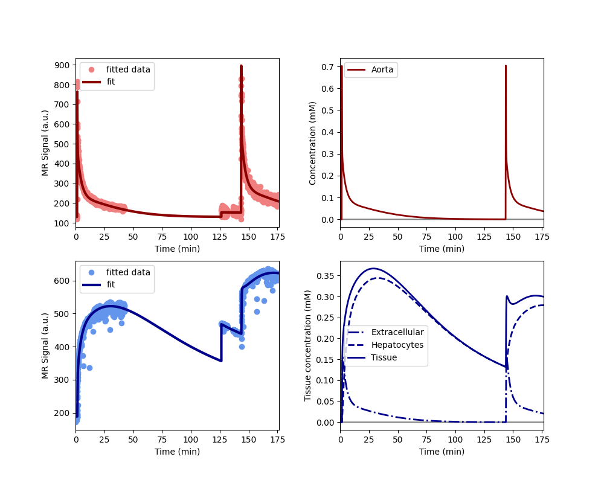

Note
Go to the end to download the full example code.
Clinical - rifampicin induced inhibition of liver function#
This example illustrates the use of AortaLiver2scan for joint
fitting of aorta and liver signals measured over 2 separate scans. The use
case is provided by the liver work package of the
TRISTAN project which develops imaging
biomarkers for drug safety assessment. The data and analysis was first
presented at the ISMRM in 2024 (Min et al 2024, manuscript in press).
The data were acquired in the aorta and liver of 10 healthy volunteers with dynamic gadoxetate-enhanced MRI, before and after administration of a drug (rifampicin) which is known to inhibit liver function. The assessments were done on two separate visits at least 2 weeks apart. On each visit, the volunteer had two scans each with a separate contrast agent injection of a quarter dose each. the scans were separated by a gap of about 1 hour to enable gadoxetate to clear from the liver. This design was deemed necessary for reliable measurement of excretion rate when liver function was inhibited.
The research question was to what extent rifampicin inhibits gadoxetate uptake rate from the extracellular space into the liver hepatocytes (khe, mL/min/100mL) and excretion rate from hepatocytes to bile (kbh, mL/100mL/min).
2 of the volunteers only had the baseline assessment, the other 8 volunteers completed the full study. The results showed consistent and strong inhibition of khe (95%) and kbh (40%) by rifampicin. This implies that rifampicin poses a risk of drug-drug interactions (DDI), meaning it can cause another drug to circulate in the body for far longer than expected, potentially causing harm or raising a need for dose adjustment.
Note: this example is different to the 1 scan example of the same study in that this uses both scans to fit the model.
Reference#
Thazin Min, Marta Tibiletti, Paul Hockings, Aleksandra Galetin, Ebony Gunwhy, Gerry Kenna, Nicola Melillo, Geoff JM Parker, Gunnar Schuetz, Daniel Scotcher, John Waterton, Ian Rowe, and Steven Sourbron. Measurement of liver function with dynamic gadoxetate-enhanced MRI: a validation study in healthy volunteers. Proc Intl Soc Mag Reson Med, Singapore 2024.
Setup#
Model definition#
In order to avoid some repetition in this script, we define a function that returns a trained model for a single dataset with 2 scans:
def tristan_human_2scan(roi, par, **kwargs):
model = dc.AortaLiver2scan(
# Injection parameters
weight = par['weight'],
agent = 'gadoxetate',
dose = par['dose_1'],
dose2 = par['dose_2'],
rate = 1,
# Acquisition parameters
field_strength = 3,
t0 = par['t0'],
TR = par['TR'],
FA = par['FA_1'],
FA2 = par['FA_2'],
TS = roi['time_1'][1]-roi['time_1'][0],
# Signal parameters
R10a = 1/par['T1_aorta_1'],
R10l = 1/par['T1_liver_1'],
R102a = 1/par['T1_aorta_3'],
R102l = 1/par['T1_liver_3'],
# Tissue parameters
vol = par['liver_volume'],
)
xdata = (
roi['time_1'][roi['aorta_1_accept']] - roi['time_1'][0],
roi['time_2'][roi['aorta_2_accept']] - roi['time_1'][0],
roi['time_1'][roi['liver_1_accept']] - roi['time_1'][0],
roi['time_2'][roi['liver_2_accept']] - roi['time_1'][0],
)
ydata = (
roi['aorta_1'][roi['aorta_1_accept']],
roi['aorta_2'][roi['aorta_2_accept']],
roi['liver_1'][roi['liver_1_accept']],
roi['liver_2'][roi['liver_2_accept']],
)
model.train(xdata, ydata, **kwargs)
return xdata, ydata, model
Before running the full analysis on all cases, lets illustrate the results by fitting the baseline visit for the first subject. We use maximum verbosity to get some feedback about the iterations:
Iteration Total nfev Cost Cost reduction Step norm Optimality
0 1 1.8777e+07 2.59e+09
1 2 4.0489e+06 1.47e+07 5.46e+02 1.21e+09
2 3 1.7966e+06 2.25e+06 1.97e+02 1.30e+09
3 4 9.6483e+05 8.32e+05 3.61e+02 9.58e+08
4 5 4.6812e+05 4.97e+05 1.14e+02 8.59e+08
5 6 2.6100e+05 2.07e+05 7.59e+01 5.41e+08
6 7 1.9199e+05 6.90e+04 2.92e+01 2.13e+08
7 8 1.7701e+05 1.50e+04 2.23e+01 3.18e+07
8 9 1.7331e+05 3.70e+03 2.95e+01 2.21e+07
9 10 1.7219e+05 1.12e+03 1.31e+01 2.70e+06
10 12 1.7170e+05 4.84e+02 2.95e+00 9.63e+03
`xtol` termination condition is satisfied.
Function evaluations 12, initial cost 1.8777e+07, final cost 1.7170e+05, first-order optimality 9.63e+03.
Iteration Total nfev Cost Cost reduction Step norm Optimality
0 1 1.6256e+07 5.93e+08
1 2 5.3227e+06 1.09e+07 3.50e+03 1.11e+09
2 3 2.1791e+05 5.10e+06 7.42e+02 3.89e+06
3 5 1.7776e+05 4.01e+04 5.74e+02 1.13e+07
4 6 1.5782e+05 1.99e+04 6.17e+02 1.24e+07
5 7 1.4923e+05 8.60e+03 6.51e+02 1.46e+07
6 8 1.4561e+05 3.62e+03 1.32e+02 3.82e+05
7 10 1.4019e+05 5.41e+03 4.21e+02 6.45e+06
8 11 1.3954e+05 6.50e+02 1.13e+02 2.93e+05
9 13 1.3557e+05 3.97e+03 3.88e+02 5.12e+06
10 14 1.3508e+05 4.89e+02 1.06e+02 2.54e+05
11 16 1.3221e+05 2.88e+03 3.54e+02 3.92e+06
12 17 1.3185e+05 3.63e+02 9.97e+01 2.28e+05
13 19 1.2978e+05 2.06e+03 3.18e+02 2.92e+06
14 20 1.2952e+05 2.60e+02 9.11e+01 1.94e+05
15 22 1.2806e+05 1.47e+03 2.81e+02 2.12e+06
16 23 1.2787e+05 1.84e+02 8.13e+01 1.59e+05
17 24 1.2785e+05 2.63e+01 1.02e+03 2.01e+07
18 25 1.2471e+05 3.14e+03 1.34e+02 1.72e+05
19 26 1.2434e+05 3.69e+02 4.46e+02 2.99e+06
20 27 1.2424e+05 9.84e+01 5.03e+01 4.80e+04
21 28 1.2418e+05 5.70e+01 1.68e+02 3.92e+05
22 29 1.2417e+05 7.58e+00 3.39e+01 1.16e+04
23 30 1.2417e+05 4.82e+00 4.90e+01 2.88e+04
24 31 1.2417e+05 9.23e-01 1.95e+01 3.14e+03
25 32 1.2417e+05 1.76e-01 8.56e+00 2.76e+02
`xtol` termination condition is satisfied.
Function evaluations 32, initial cost 1.6256e+07, final cost 1.2417e+05, first-order optimality 2.76e+02.
Iteration Total nfev Cost Cost reduction Step norm Optimality
0 1 2.9587e+05 5.66e+04
1 4 2.9538e+05 4.93e+02 2.28e+02 2.05e+07
2 6 2.9499e+05 3.88e+02 7.56e+01 7.55e+06
3 8 2.9496e+05 2.81e+01 7.51e+00 9.80e+06
`xtol` termination condition is satisfied.
Function evaluations 8, initial cost 2.9587e+05, final cost 2.9496e+05, first-order optimality 9.80e+06.
Plot the results to check that the model has fitted the data. The plot also shows the concentration in the two liver compartments separately:
Print the measured model parameters and any derived parameters. Standard deviations are included as a measure of parameter uncertainty, indicate that all parameters are identified robustly:
model.print_params(round_to=3)
--------------------------------
Free parameters with their stdev
--------------------------------
Aorta second signal scale factor (S02a): 9790.645 (18.19) a.u.
Liver second signal scale factor (S02l): 7648.221 (67.407) a.u.
Second bolus arrival time (BAT2): 8605.984 (0.411) sec
First bolus arrival time (BAT): 75.584 (0.429) sec
Cardiac output (CO): 150.147 (3.003) mL/sec
Heart-lung mean transit time (Thl): 21.189 (0.727) sec
Heart-lung dispersion (Dhl): 0.758 (0.016)
Organs blood mean transit time (To): 25.709 (0.657) sec
Organs extraction fraction (Eo): 0.128 (0.002)
Organs extravascular mean transit time (Toe): 502.89 (15.363) sec
Body extraction fraction (Eb): 0.056 (0.002)
Liver extracellular volume fraction (ve): 0.299 (0.008) mL/cm3
Extracellular mean transit time (Te): 39.546 (1.398) sec
Extracellular dispersion (De): 0.722 (0.019)
Initial hepatocellular uptake rate (khe_i): 0.004 (0.0) mL/sec/cm3
Final hepatocellular uptake rate (khe_f): 0.001 (0.0) mL/sec/cm3
Initial hepatocellular mean transit time (Th_i): 1265.112 (55.845) sec
Final hepatocellular mean transit time (Th_f): 7963.376 (247.242) sec
----------------------------
Fixed and derived parameters
----------------------------
Hematocrit (H): 0.45
Hepatocellular mean transit time (Th): 4614.244 sec
Hepatocellular uptake rate (khe): 0.002 mL/sec/cm3
Biliary tissue excretion rate (Kbh): 0.0 mL/sec/cm3
Hepatocellular tissue uptake rate (Khe): 0.008 mL/sec/cm3
Biliary excretion rate (kbh): 0.0 mL/sec/cm3
Initial biliary excretion rate (kbh_i): 0.001 mL/sec/cm3
Final biliary excretion rate (kbh_f): 0.0 mL/sec/cm3
Liver blood clearance (CL): 2.763 mL/sec
Fit all data#
Now that we have illustrated an individual result in some detail, we proceed with fitting the data for all 10 volunteers, at baseline and rifampicin visit. We do not print output for these individual computations and instead store results in one single dataframe:
results = []
# Loop over all datasets
for subj in rois.keys():
for visit in rois[subj].keys():
roi = rois[subj][visit]
par = pars[subj][visit]
# Generate a trained model for the scan:
_, _, model = tristan_human_2scan(roi, par, xtol=1e-3)
# Export fitted parameters as lists
rows = model.export_params(type='list')
# Add visit and subject info
rows = [row + [visit, subj] for row in rows]
# Add to the list of all results
results += rows
# Combine all results into a single dataframe.
cols = ['parameter', 'name', 'value', 'unit', 'stdev',
'visit', 'subject']
results = pd.DataFrame(results, columns=cols)
# Print all results
print(results.to_string())
parameter name value unit stdev visit subject
0 S02a Aorta second signal scale factor 9.790645e+03 a.u. 1.819040e+01 control 001
1 S02l Liver second signal scale factor 7.648221e+03 a.u. 6.740686e+01 control 001
2 BAT2 Second bolus arrival time 8.605984e+03 sec 4.108570e-01 control 001
3 BAT First bolus arrival time 7.558391e+01 sec 4.288149e-01 control 001
4 CO Cardiac output 1.501472e+02 mL/sec 3.002699e+00 control 001
5 Thl Heart-lung mean transit time 2.118884e+01 sec 7.267749e-01 control 001
6 Dhl Heart-lung dispersion 7.581707e-01 1.567834e-02 control 001
7 To Organs blood mean transit time 2.570856e+01 sec 6.567367e-01 control 001
8 Eo Organs extraction fraction 1.279154e-01 2.458967e-03 control 001
9 Toe Organs extravascular mean transit time 5.028899e+02 sec 1.536268e+01 control 001
10 Eb Body extraction fraction 5.645995e-02 1.917502e-03 control 001
11 H Hematocrit 4.500000e-01 0.000000e+00 control 001
12 ve Liver extracellular volume fraction 2.985298e-01 mL/cm3 7.709708e-03 control 001
13 Te Extracellular mean transit time 3.954582e+01 sec 1.398187e+00 control 001
14 De Extracellular dispersion 7.218853e-01 1.933904e-02 control 001
15 khe_i Initial hepatocellular uptake rate 4.072609e-03 mL/sec/cm3 3.985383e-05 control 001
16 khe_f Final hepatocellular uptake rate 9.230432e-04 mL/sec/cm3 2.254039e-05 control 001
17 Th_i Initial hepatocellular mean transit time 1.265112e+03 sec 5.584541e+01 control 001
18 Th_f Final hepatocellular mean transit time 7.963376e+03 sec 2.472421e+02 control 001
19 Th Hepatocellular mean transit time 4.614244e+03 sec 0.000000e+00 control 001
20 khe Hepatocellular uptake rate 2.497826e-03 mL/sec/cm3 0.000000e+00 control 001
21 Kbh Biliary tissue excretion rate 2.167202e-04 mL/sec/cm3 0.000000e+00 control 001
22 Khe Hepatocellular tissue uptake rate 8.367093e-03 mL/sec/cm3 0.000000e+00 control 001
23 kbh Biliary excretion rate 1.520228e-04 mL/sec/cm3 0.000000e+00 control 001
24 kbh_i Initial biliary excretion rate 5.544729e-04 mL/sec/cm3 0.000000e+00 control 001
25 kbh_f Final biliary excretion rate 8.808704e-05 mL/sec/cm3 0.000000e+00 control 001
26 CL Liver blood clearance 2.763129e+00 mL/sec 0.000000e+00 control 001
27 S02a Aorta second signal scale factor 1.067153e+04 a.u. 2.436546e+01 control 002
28 S02l Liver second signal scale factor 7.794128e+03 a.u. 1.944835e+01 control 002
29 BAT2 Second bolus arrival time 1.716513e+04 sec 3.109014e-01 control 002
30 BAT First bolus arrival time 8.100633e+01 sec 3.343855e-01 control 002
31 CO Cardiac output 3.921697e+01 mL/sec 9.947703e-01 control 002
32 Thl Heart-lung mean transit time 1.471085e+01 sec 6.183024e-01 control 002
33 Dhl Heart-lung dispersion 6.410138e-01 1.358620e-02 control 002
34 To Organs blood mean transit time 3.283050e+01 sec 1.878361e+00 control 002
35 Eo Organs extraction fraction 2.045170e-01 8.171885e-03 control 002
36 Toe Organs extravascular mean transit time 4.230557e+02 sec 3.153851e+01 control 002
37 Eb Body extraction fraction 7.287376e-02 4.232577e-03 control 002
38 H Hematocrit 4.500000e-01 0.000000e+00 control 002
39 ve Liver extracellular volume fraction 1.000458e-02 mL/cm3 1.825104e-02 control 002
40 Te Extracellular mean transit time 2.787651e+00 sec 3.913701e+00 control 002
41 De Extracellular dispersion 1.503638e-01 5.183752e+00 control 002
42 khe_i Initial hepatocellular uptake rate 2.821248e-03 mL/sec/cm3 5.997047e-05 control 002
43 khe_f Final hepatocellular uptake rate 6.902210e-03 mL/sec/cm3 1.292059e-04 control 002
44 Th_i Initial hepatocellular mean transit time 2.941213e+03 sec 1.798649e+02 control 002
45 Th_f Final hepatocellular mean transit time 1.792285e+03 sec 7.190541e+01 control 002
46 Th Hepatocellular mean transit time 2.366749e+03 sec 0.000000e+00 control 002
47 khe Hepatocellular uptake rate 4.861729e-03 mL/sec/cm3 0.000000e+00 control 002
48 Kbh Biliary tissue excretion rate 4.225205e-04 mL/sec/cm3 0.000000e+00 control 002
49 Khe Hepatocellular tissue uptake rate 4.859502e-01 mL/sec/cm3 0.000000e+00 control 002
50 kbh Biliary excretion rate 4.182933e-04 mL/sec/cm3 0.000000e+00 control 002
51 kbh_i Initial biliary excretion rate 3.365943e-04 mL/sec/cm3 0.000000e+00 control 002
52 kbh_f Final biliary excretion rate 5.523649e-04 mL/sec/cm3 0.000000e+00 control 002
53 CL Liver blood clearance 3.323863e+00 mL/sec 0.000000e+00 control 002
54 S02a Aorta second signal scale factor 1.024057e+04 a.u. 1.513829e+01 drug 002
55 S02l Liver second signal scale factor 8.521067e+03 a.u. 1.566161e+02 drug 002
56 BAT2 Second bolus arrival time 1.027811e+04 sec 2.587103e-01 drug 002
57 BAT First bolus arrival time 7.136664e+01 sec 2.667076e-01 drug 002
58 CO Cardiac output 5.531803e+01 mL/sec 9.080827e-01 drug 002
59 Thl Heart-lung mean transit time 1.750354e+01 sec 3.927314e-01 drug 002
60 Dhl Heart-lung dispersion 4.043587e-01 8.280700e-03 drug 002
61 To Organs blood mean transit time 2.010887e+01 sec 1.030610e+00 drug 002
62 Eo Organs extraction fraction 1.802785e-01 8.298877e-03 drug 002
63 Toe Organs extravascular mean transit time 2.577640e+02 sec 1.794501e+01 drug 002
64 Eb Body extraction fraction 6.109319e-02 2.080054e-03 drug 002
65 H Hematocrit 4.500000e-01 0.000000e+00 drug 002
66 ve Liver extracellular volume fraction 1.813419e-01 mL/cm3 8.840426e-03 drug 002
67 Te Extracellular mean transit time 3.562652e+01 sec 3.143531e+00 drug 002
68 De Extracellular dispersion 6.978039e-01 4.249073e-02 drug 002
69 khe_i Initial hepatocellular uptake rate 2.782874e-04 mL/sec/cm3 1.445532e-05 drug 002
70 khe_f Final hepatocellular uptake rate 3.644469e-04 mL/sec/cm3 5.358499e-05 drug 002
71 Th_i Initial hepatocellular mean transit time 3.599985e+04 sec 4.541358e+04 drug 002
72 Th_f Final hepatocellular mean transit time 1.932531e+03 sec 8.636800e+02 drug 002
73 Th Hepatocellular mean transit time 1.896619e+04 sec 0.000000e+00 drug 002
74 khe Hepatocellular uptake rate 3.213671e-04 mL/sec/cm3 0.000000e+00 drug 002
75 Kbh Biliary tissue excretion rate 5.272540e-05 mL/sec/cm3 0.000000e+00 drug 002
76 Khe Hepatocellular tissue uptake rate 1.772161e-03 mL/sec/cm3 0.000000e+00 drug 002
77 kbh Biliary excretion rate 4.316407e-05 mL/sec/cm3 0.000000e+00 drug 002
78 kbh_i Initial biliary excretion rate 2.274060e-05 mL/sec/cm3 0.000000e+00 drug 002
79 kbh_f Final biliary excretion rate 4.236196e-04 mL/sec/cm3 0.000000e+00 drug 002
80 CL Liver blood clearance 2.578783e-01 mL/sec 0.000000e+00 drug 002
81 S02a Aorta second signal scale factor 1.126870e+04 a.u. 1.582046e+01 control 003
82 S02l Liver second signal scale factor 8.751509e+03 a.u. 1.497266e+01 control 003
83 BAT2 Second bolus arrival time 9.292805e+03 sec 8.668147e-10 control 003
84 BAT First bolus arrival time 7.218977e+01 sec 9.580942e-01 control 003
85 CO Cardiac output 1.086297e+02 mL/sec 3.749701e+00 control 003
86 Thl Heart-lung mean transit time 1.059360e+01 sec 1.114756e+00 control 003
87 Dhl Heart-lung dispersion 2.651521e-01 1.374923e-02 control 003
88 To Organs blood mean transit time 2.335076e-03 sec 9.339678e-01 control 003
89 Eo Organs extraction fraction 2.518435e-01 1.397371e-02 control 003
90 Toe Organs extravascular mean transit time 1.319178e+02 sec 8.127160e+00 control 003
91 Eb Body extraction fraction 5.005647e-02 2.487578e-03 control 003
92 H Hematocrit 4.500000e-01 0.000000e+00 control 003
93 ve Liver extracellular volume fraction 3.280798e-01 mL/cm3 2.250492e-01 control 003
94 Te Extracellular mean transit time 5.797145e+01 sec 4.264034e+01 control 003
95 De Extracellular dispersion 9.376748e-01 6.916310e-02 control 003
96 khe_i Initial hepatocellular uptake rate 5.526213e-03 mL/sec/cm3 2.707894e-04 control 003
97 khe_f Final hepatocellular uptake rate 2.312851e-07 mL/sec/cm3 1.622732e-02 control 003
98 Th_i Initial hepatocellular mean transit time 2.331682e+03 sec 9.768837e+02 control 003
99 Th_f Final hepatocellular mean transit time 6.054485e+02 sec 1.169917e+03 control 003
100 Th Hepatocellular mean transit time 1.468565e+03 sec 0.000000e+00 control 003
101 khe Hepatocellular uptake rate 2.763222e-03 mL/sec/cm3 0.000000e+00 control 003
102 Kbh Biliary tissue excretion rate 6.809368e-04 mL/sec/cm3 0.000000e+00 control 003
103 Khe Hepatocellular tissue uptake rate 8.422409e-03 mL/sec/cm3 0.000000e+00 control 003
104 kbh Biliary excretion rate 4.575352e-04 mL/sec/cm3 0.000000e+00 control 003
105 kbh_i Initial biliary excretion rate 2.881698e-04 mL/sec/cm3 0.000000e+00 control 003
106 kbh_f Final biliary excretion rate 1.109789e-03 mL/sec/cm3 0.000000e+00 control 003
107 CL Liver blood clearance 2.415256e+00 mL/sec 0.000000e+00 control 003
108 S02a Aorta second signal scale factor 1.280385e+04 a.u. 1.725548e+01 drug 003
109 S02l Liver second signal scale factor 9.289203e+03 a.u. 4.254702e+01 drug 003
110 BAT2 Second bolus arrival time 7.306384e+03 sec 6.419619e-01 drug 003
111 BAT First bolus arrival time 6.415539e+01 sec 6.663906e-01 drug 003
112 CO Cardiac output 6.491461e+01 mL/sec 1.196269e+00 drug 003
113 Thl Heart-lung mean transit time 1.608535e+01 sec 7.672895e-01 drug 003
114 Dhl Heart-lung dispersion 4.132376e-01 1.344874e-02 drug 003
115 To Organs blood mean transit time 2.377812e+01 sec 8.753632e-01 drug 003
116 Eo Organs extraction fraction 1.184987e-01 5.207163e-03 drug 003
117 Toe Organs extravascular mean transit time 3.532561e+02 sec 2.178515e+01 drug 003
118 Eb Body extraction fraction 3.522457e-02 1.236775e-03 drug 003
119 H Hematocrit 4.500000e-01 0.000000e+00 drug 003
120 ve Liver extracellular volume fraction 2.005224e-01 mL/cm3 9.085143e-03 drug 003
121 Te Extracellular mean transit time 2.807449e+01 sec 2.062979e+00 drug 003
122 De Extracellular dispersion 6.463976e-01 3.888486e-02 drug 003
123 khe_i Initial hepatocellular uptake rate 3.503724e-04 mL/sec/cm3 2.605894e-05 drug 003
124 khe_f Final hepatocellular uptake rate 4.614307e-04 mL/sec/cm3 5.617441e-05 drug 003
125 Th_i Initial hepatocellular mean transit time 3.913473e+03 sec 9.307798e+02 drug 003
126 Th_f Final hepatocellular mean transit time 3.339952e+03 sec 7.547031e+02 drug 003
127 Th Hepatocellular mean transit time 3.626713e+03 sec 0.000000e+00 drug 003
128 khe Hepatocellular uptake rate 4.059016e-04 mL/sec/cm3 0.000000e+00 drug 003
129 Kbh Biliary tissue excretion rate 2.757318e-04 mL/sec/cm3 0.000000e+00 drug 003
130 Khe Hepatocellular tissue uptake rate 2.024220e-03 mL/sec/cm3 0.000000e+00 drug 003
131 kbh Biliary excretion rate 2.204414e-04 mL/sec/cm3 0.000000e+00 drug 003
132 kbh_i Initial biliary excretion rate 2.042885e-04 mL/sec/cm3 0.000000e+00 drug 003
133 kbh_f Final biliary excretion rate 2.393679e-04 mL/sec/cm3 0.000000e+00 drug 003
134 CL Liver blood clearance 3.497928e-01 mL/sec 0.000000e+00 drug 003
135 S02a Aorta second signal scale factor 6.264891e+03 a.u. 2.037288e+01 control 004
136 S02l Liver second signal scale factor 5.334207e+03 a.u. 9.427645e+01 control 004
137 BAT2 Second bolus arrival time 9.546044e+03 sec 7.813532e-02 control 004
138 BAT First bolus arrival time 7.111492e+01 sec 8.142436e-02 control 004
139 CO Cardiac output 4.712753e+01 mL/sec 4.870679e-01 control 004
140 Thl Heart-lung mean transit time 1.232815e+01 sec 1.289438e-01 control 004
141 Dhl Heart-lung dispersion 4.000424e-01 4.422019e-03 control 004
142 To Organs blood mean transit time 3.235814e+01 sec 9.391146e-01 control 004
143 Eo Organs extraction fraction 2.730510e-01 5.751224e-03 control 004
144 Toe Organs extravascular mean transit time 3.747271e+02 sec 1.732962e+01 control 004
145 Eb Body extraction fraction 1.489570e-01 4.201235e-03 control 004
146 H Hematocrit 4.500000e-01 0.000000e+00 control 004
147 ve Liver extracellular volume fraction 5.987639e-02 mL/cm3 1.211494e-02 control 004
148 Te Extracellular mean transit time 2.578966e+01 sec 4.420578e+00 control 004
149 De Extracellular dispersion 5.822189e-01 8.516346e-02 control 004
150 khe_i Initial hepatocellular uptake rate 2.138194e-03 mL/sec/cm3 2.913040e-05 control 004
151 khe_f Final hepatocellular uptake rate 3.411637e-03 mL/sec/cm3 8.349187e-05 control 004
152 Th_i Initial hepatocellular mean transit time 1.113201e+04 sec 1.604382e+03 control 004
153 Th_f Final hepatocellular mean transit time 2.257134e+04 sec 4.806979e+03 control 004
154 Th Hepatocellular mean transit time 1.685168e+04 sec 0.000000e+00 control 004
155 khe Hepatocellular uptake rate 2.774915e-03 mL/sec/cm3 0.000000e+00 control 004
156 Kbh Biliary tissue excretion rate 5.934127e-05 mL/sec/cm3 0.000000e+00 control 004
157 Khe Hepatocellular tissue uptake rate 4.634407e-02 mL/sec/cm3 0.000000e+00 control 004
158 kbh Biliary excretion rate 5.578813e-05 mL/sec/cm3 0.000000e+00 control 004
159 kbh_i Initial biliary excretion rate 8.445227e-05 mL/sec/cm3 0.000000e+00 control 004
160 kbh_f Final biliary excretion rate 4.165120e-05 mL/sec/cm3 0.000000e+00 control 004
161 CL Liver blood clearance 2.458707e+00 mL/sec 0.000000e+00 control 004
162 S02a Aorta second signal scale factor 7.025669e+03 a.u. 1.575401e+01 drug 004
163 S02l Liver second signal scale factor 6.224727e+03 a.u. 8.356437e+01 drug 004
164 BAT2 Second bolus arrival time 9.207037e+03 sec 1.007243e-01 drug 004
165 BAT First bolus arrival time 6.150700e+01 sec 9.661728e-02 drug 004
166 CO Cardiac output 6.578718e+01 mL/sec 5.690652e-01 drug 004
167 Thl Heart-lung mean transit time 2.055720e+01 sec 1.550536e-01 drug 004
168 Dhl Heart-lung dispersion 3.260577e-01 3.264330e-03 drug 004
169 To Organs blood mean transit time 3.628148e+01 sec 1.055846e+00 drug 004
170 Eo Organs extraction fraction 2.216650e-01 5.996632e-03 drug 004
171 Toe Organs extravascular mean transit time 3.339233e+02 sec 1.672941e+01 drug 004
172 Eb Body extraction fraction 5.088333e-02 1.663561e-03 drug 004
173 H Hematocrit 4.500000e-01 0.000000e+00 drug 004
174 ve Liver extracellular volume fraction 1.953414e-01 mL/cm3 7.766763e-03 drug 004
175 Te Extracellular mean transit time 5.273004e+01 sec 3.183034e+00 drug 004
176 De Extracellular dispersion 8.040218e-01 2.048512e-02 drug 004
177 khe_i Initial hepatocellular uptake rate 1.889276e-04 mL/sec/cm3 2.287124e-05 drug 004
178 khe_f Final hepatocellular uptake rate 3.053184e-04 mL/sec/cm3 2.654593e-05 drug 004
179 Th_i Initial hepatocellular mean transit time 4.574680e+03 sec 2.232140e+03 drug 004
180 Th_f Final hepatocellular mean transit time 5.011342e+03 sec 1.778301e+03 drug 004
181 Th Hepatocellular mean transit time 4.793011e+03 sec 0.000000e+00 drug 004
182 khe Hepatocellular uptake rate 2.471230e-04 mL/sec/cm3 0.000000e+00 drug 004
183 Kbh Biliary tissue excretion rate 2.086371e-04 mL/sec/cm3 0.000000e+00 drug 004
184 Khe Hepatocellular tissue uptake rate 1.265083e-03 mL/sec/cm3 0.000000e+00 drug 004
185 kbh Biliary excretion rate 1.678817e-04 mL/sec/cm3 0.000000e+00 drug 004
186 kbh_i Initial biliary excretion rate 1.758940e-04 mL/sec/cm3 0.000000e+00 drug 004
187 kbh_f Final biliary excretion rate 1.605675e-04 mL/sec/cm3 0.000000e+00 drug 004
188 CL Liver blood clearance 2.429902e-01 mL/sec 0.000000e+00 drug 004
189 S02a Aorta second signal scale factor 7.726120e+03 a.u. 1.446403e+01 control 005
190 S02l Liver second signal scale factor 9.089801e+03 a.u. 2.424109e+01 control 005
191 BAT2 Second bolus arrival time 1.002990e+04 sec 3.714707e-01 control 005
192 BAT First bolus arrival time 7.614996e+01 sec 4.437627e-01 control 005
193 CO Cardiac output 5.604992e+01 mL/sec 9.632796e-01 control 005
194 Thl Heart-lung mean transit time 1.398739e+01 sec 5.947882e-01 control 005
195 Dhl Heart-lung dispersion 6.965721e-01 1.821456e-02 control 005
196 To Organs blood mean transit time 3.340178e+01 sec 1.154244e+00 control 005
197 Eo Organs extraction fraction 1.917576e-01 5.384190e-03 control 005
198 Toe Organs extravascular mean transit time 3.570076e+02 sec 1.454155e+01 control 005
199 Eb Body extraction fraction 7.845596e-02 2.492623e-03 control 005
200 H Hematocrit 4.500000e-01 0.000000e+00 control 005
201 ve Liver extracellular volume fraction 1.296755e-01 mL/cm3 1.569760e-02 control 005
202 Te Extracellular mean transit time 3.239082e+01 sec 4.145470e+00 control 005
203 De Extracellular dispersion 6.952155e-01 5.266387e-02 control 005
204 khe_i Initial hepatocellular uptake rate 3.858674e-03 mL/sec/cm3 4.180565e-05 control 005
205 khe_f Final hepatocellular uptake rate 2.692713e-03 mL/sec/cm3 3.913171e-05 control 005
206 Th_i Initial hepatocellular mean transit time 1.862728e+03 sec 3.892957e+01 control 005
207 Th_f Final hepatocellular mean transit time 2.096992e+03 sec 6.676368e+01 control 005
208 Th Hepatocellular mean transit time 1.979860e+03 sec 0.000000e+00 control 005
209 khe Hepatocellular uptake rate 3.275693e-03 mL/sec/cm3 0.000000e+00 control 005
210 Kbh Biliary tissue excretion rate 5.050863e-04 mL/sec/cm3 0.000000e+00 control 005
211 Khe Hepatocellular tissue uptake rate 2.526070e-02 mL/sec/cm3 0.000000e+00 control 005
212 kbh Biliary excretion rate 4.395890e-04 mL/sec/cm3 0.000000e+00 control 005
213 kbh_i Initial biliary excretion rate 4.672312e-04 mL/sec/cm3 0.000000e+00 control 005
214 kbh_f Final biliary excretion rate 4.150348e-04 mL/sec/cm3 0.000000e+00 control 005
215 CL Liver blood clearance 2.310420e+00 mL/sec 0.000000e+00 control 005
216 S02a Aorta second signal scale factor 6.292205e+03 a.u. 1.745792e+01 control 006
217 S02l Liver second signal scale factor 6.559557e+03 a.u. 4.963576e+01 control 006
218 BAT2 Second bolus arrival time 8.584679e+03 sec 3.235349e-01 control 006
219 BAT First bolus arrival time 6.970605e+01 sec 3.220324e-01 control 006
220 CO Cardiac output 5.011177e+01 mL/sec 5.805452e-01 control 006
221 Thl Heart-lung mean transit time 1.603134e+01 sec 3.623860e-01 control 006
222 Dhl Heart-lung dispersion 2.969414e-01 6.101884e-03 control 006
223 To Organs blood mean transit time 3.157011e+01 sec 1.200544e+00 control 006
224 Eo Organs extraction fraction 1.951343e-01 7.081210e-03 control 006
225 Toe Organs extravascular mean transit time 3.539476e+02 sec 2.014023e+01 control 006
226 Eb Body extraction fraction 8.363087e-02 2.765823e-03 control 006
227 H Hematocrit 4.500000e-01 0.000000e+00 control 006
228 ve Liver extracellular volume fraction 2.472340e-01 mL/cm3 3.660919e-02 control 006
229 Te Extracellular mean transit time 5.483203e+01 sec 7.997865e+00 control 006
230 De Extracellular dispersion 7.380212e-01 4.288373e-02 control 006
231 khe_i Initial hepatocellular uptake rate 4.348603e-03 mL/sec/cm3 7.076769e-05 control 006
232 khe_f Final hepatocellular uptake rate 3.537081e-03 mL/sec/cm3 7.040039e-05 control 006
233 Th_i Initial hepatocellular mean transit time 2.853036e+03 sec 1.140698e+02 control 006
234 Th_f Final hepatocellular mean transit time 2.476063e+03 sec 1.262808e+02 control 006
235 Th Hepatocellular mean transit time 2.664549e+03 sec 0.000000e+00 control 006
236 khe Hepatocellular uptake rate 3.942842e-03 mL/sec/cm3 0.000000e+00 control 006
237 Kbh Biliary tissue excretion rate 3.752980e-04 mL/sec/cm3 0.000000e+00 control 006
238 Khe Hepatocellular tissue uptake rate 1.594782e-02 mL/sec/cm3 0.000000e+00 control 006
239 kbh Biliary excretion rate 2.825116e-04 mL/sec/cm3 0.000000e+00 control 006
240 kbh_i Initial biliary excretion rate 2.638474e-04 mL/sec/cm3 0.000000e+00 control 006
241 kbh_f Final biliary excretion rate 3.040173e-04 mL/sec/cm3 0.000000e+00 control 006
242 CL Liver blood clearance 2.725095e+00 mL/sec 0.000000e+00 control 006
243 S02a Aorta second signal scale factor 8.299310e+03 a.u. 1.210577e+01 drug 006
244 S02l Liver second signal scale factor 6.049581e+03 a.u. 1.039206e+02 drug 006
245 BAT2 Second bolus arrival time 9.498542e+03 sec 1.844967e-01 drug 006
246 BAT First bolus arrival time 6.935194e+01 sec 1.524137e-01 drug 006
247 CO Cardiac output 8.613254e+01 mL/sec 1.025472e+00 drug 006
248 Thl Heart-lung mean transit time 1.688836e+01 sec 2.544116e-01 drug 006
249 Dhl Heart-lung dispersion 3.899914e-01 4.547909e-03 drug 006
250 To Organs blood mean transit time 2.567489e+01 sec 7.632747e-01 drug 006
251 Eo Organs extraction fraction 1.345560e-01 4.430814e-03 drug 006
252 Toe Organs extravascular mean transit time 3.461345e+02 sec 1.943602e+01 drug 006
253 Eb Body extraction fraction 2.883671e-02 1.177512e-03 drug 006
254 H Hematocrit 4.500000e-01 0.000000e+00 drug 006
255 ve Liver extracellular volume fraction 3.153699e-01 mL/cm3 9.325060e-03 drug 006
256 Te Extracellular mean transit time 4.242700e+01 sec 1.797941e+00 drug 006
257 De Extracellular dispersion 6.620729e-01 2.057131e-02 drug 006
258 khe_i Initial hepatocellular uptake rate 1.530614e-04 mL/sec/cm3 2.354963e-05 drug 006
259 khe_f Final hepatocellular uptake rate 2.648234e-04 mL/sec/cm3 3.650516e-05 drug 006
260 Th_i Initial hepatocellular mean transit time 7.886768e+03 sec 6.808980e+03 drug 006
261 Th_f Final hepatocellular mean transit time 4.202062e+03 sec 2.311126e+03 drug 006
262 Th Hepatocellular mean transit time 6.044415e+03 sec 0.000000e+00 drug 006
263 khe Hepatocellular uptake rate 2.089424e-04 mL/sec/cm3 0.000000e+00 drug 006
264 Kbh Biliary tissue excretion rate 1.654420e-04 mL/sec/cm3 0.000000e+00 drug 006
265 Khe Hepatocellular tissue uptake rate 6.625311e-04 mL/sec/cm3 0.000000e+00 drug 006
266 kbh Biliary excretion rate 1.132665e-04 mL/sec/cm3 0.000000e+00 drug 006
267 kbh_i Initial biliary excretion rate 8.680743e-05 mL/sec/cm3 0.000000e+00 drug 006
268 kbh_f Final biliary excretion rate 1.629272e-04 mL/sec/cm3 0.000000e+00 drug 006
269 CL Liver blood clearance 1.474635e-01 mL/sec 0.000000e+00 drug 006
270 S02a Aorta second signal scale factor 6.510588e+03 a.u. 1.878945e+01 control 007
271 S02l Liver second signal scale factor 7.566895e+03 a.u. 6.509727e+01 control 007
272 BAT2 Second bolus arrival time 7.274293e+03 sec 7.264468e-01 control 007
273 BAT First bolus arrival time 7.202830e+01 sec 8.214790e-01 control 007
274 CO Cardiac output 1.046572e+02 mL/sec 3.530493e+00 control 007
275 Thl Heart-lung mean transit time 7.720131e+00 sec 9.420930e-01 control 007
276 Dhl Heart-lung dispersion 5.108157e-01 3.339669e-02 control 007
277 To Organs blood mean transit time 2.209695e+01 sec 9.579079e-01 control 007
278 Eo Organs extraction fraction 1.931799e-01 8.908069e-03 control 007
279 Toe Organs extravascular mean transit time 2.660483e+02 sec 1.086418e+01 control 007
280 Eb Body extraction fraction 3.221324e-02 1.531022e-03 control 007
281 H Hematocrit 4.500000e-01 0.000000e+00 control 007
282 ve Liver extracellular volume fraction 2.034894e-01 mL/cm3 8.661683e-02 control 007
283 Te Extracellular mean transit time 5.735003e+01 sec 2.565818e+01 control 007
284 De Extracellular dispersion 9.395415e-01 3.877148e-02 control 007
285 khe_i Initial hepatocellular uptake rate 3.865146e-03 mL/sec/cm3 9.409017e-05 control 007
286 khe_f Final hepatocellular uptake rate 3.130662e-03 mL/sec/cm3 1.128844e-04 control 007
287 Th_i Initial hepatocellular mean transit time 1.467732e+03 sec 4.125304e+01 control 007
288 Th_f Final hepatocellular mean transit time 2.157525e+03 sec 7.979579e+01 control 007
289 Th Hepatocellular mean transit time 1.812629e+03 sec 0.000000e+00 control 007
290 khe Hepatocellular uptake rate 3.497904e-03 mL/sec/cm3 0.000000e+00 control 007
291 Kbh Biliary tissue excretion rate 5.516849e-04 mL/sec/cm3 0.000000e+00 control 007
292 Khe Hepatocellular tissue uptake rate 1.718961e-02 mL/sec/cm3 0.000000e+00 control 007
293 kbh Biliary excretion rate 4.394229e-04 mL/sec/cm3 0.000000e+00 control 007
294 kbh_i Initial biliary excretion rate 5.426811e-04 mL/sec/cm3 0.000000e+00 control 007
295 kbh_f Final biliary excretion rate 3.691779e-04 mL/sec/cm3 0.000000e+00 control 007
296 CL Liver blood clearance 3.302599e+00 mL/sec 0.000000e+00 control 007
297 S02a Aorta second signal scale factor 4.953224e+03 a.u. 1.095825e+01 drug 007
298 S02l Liver second signal scale factor 4.956637e+03 a.u. 5.013571e+01 drug 007
299 BAT2 Second bolus arrival time 8.064048e+03 sec 3.154645e-01 drug 007
300 BAT First bolus arrival time 7.015700e+01 sec 3.443810e-01 drug 007
301 CO Cardiac output 8.457974e+01 mL/sec 1.871192e+00 drug 007
302 Thl Heart-lung mean transit time 9.117859e+00 sec 4.704418e-01 drug 007
303 Dhl Heart-lung dispersion 5.702630e-01 1.263314e-02 drug 007
304 To Organs blood mean transit time 2.395229e+01 sec 8.620053e-01 drug 007
305 Eo Organs extraction fraction 1.803133e-01 6.054414e-03 drug 007
306 Toe Organs extravascular mean transit time 2.765511e+02 sec 1.235270e+01 drug 007
307 Eb Body extraction fraction 3.256811e-02 1.061326e-03 drug 007
308 H Hematocrit 4.500000e-01 0.000000e+00 drug 007
309 ve Liver extracellular volume fraction 1.899436e-01 mL/cm3 7.876864e-03 drug 007
310 Te Extracellular mean transit time 4.242090e+01 sec 2.772859e+00 drug 007
311 De Extracellular dispersion 7.509233e-01 2.691038e-02 drug 007
312 khe_i Initial hepatocellular uptake rate 2.216159e-04 mL/sec/cm3 7.081731e-05 drug 007
313 khe_f Final hepatocellular uptake rate 1.535914e-04 mL/sec/cm3 1.849710e-05 drug 007
314 Th_i Initial hepatocellular mean transit time 1.269319e+03 sec 3.005049e+03 drug 007
315 Th_f Final hepatocellular mean transit time 1.827336e+04 sec 7.135120e+03 drug 007
316 Th Hepatocellular mean transit time 9.771340e+03 sec 0.000000e+00 drug 007
317 khe Hepatocellular uptake rate 1.876037e-04 mL/sec/cm3 0.000000e+00 drug 007
318 Kbh Biliary tissue excretion rate 1.023401e-04 mL/sec/cm3 0.000000e+00 drug 007
319 Khe Hepatocellular tissue uptake rate 9.876810e-04 mL/sec/cm3 0.000000e+00 drug 007
320 kbh Biliary excretion rate 8.290126e-05 mL/sec/cm3 0.000000e+00 drug 007
321 kbh_i Initial biliary excretion rate 6.381818e-04 mL/sec/cm3 0.000000e+00 drug 007
322 kbh_f Final biliary excretion rate 4.432991e-05 mL/sec/cm3 0.000000e+00 drug 007
323 CL Liver blood clearance 2.092816e-01 mL/sec 0.000000e+00 drug 007
324 S02a Aorta second signal scale factor 9.768798e+03 a.u. 1.629059e+01 control 008
325 S02l Liver second signal scale factor 7.650952e+03 a.u. 3.025559e+01 control 008
326 BAT2 Second bolus arrival time 7.597609e+03 sec 2.888341e-01 control 008
327 BAT First bolus arrival time 7.992303e+01 sec 3.143708e-01 control 008
328 CO Cardiac output 1.165313e+02 mL/sec 2.013415e+00 control 008
329 Thl Heart-lung mean transit time 1.101201e+01 sec 4.330072e-01 control 008
330 Dhl Heart-lung dispersion 6.507782e-01 1.665510e-02 control 008
331 To Organs blood mean transit time 2.955304e+01 sec 9.622736e-01 control 008
332 Eo Organs extraction fraction 1.419201e-01 5.340016e-03 control 008
333 Toe Organs extravascular mean transit time 3.078803e+02 sec 1.470476e+01 control 008
334 Eb Body extraction fraction 4.656274e-02 1.397959e-03 control 008
335 H Hematocrit 4.500000e-01 0.000000e+00 control 008
336 ve Liver extracellular volume fraction 1.303202e-01 mL/cm3 1.082099e-02 control 008
337 Te Extracellular mean transit time 1.845779e+01 sec 2.015638e+00 control 008
338 De Extracellular dispersion 4.868754e-01 7.764489e-02 control 008
339 khe_i Initial hepatocellular uptake rate 4.290237e-03 mL/sec/cm3 5.290560e-05 control 008
340 khe_f Final hepatocellular uptake rate 2.703041e-03 mL/sec/cm3 4.745882e-05 control 008
341 Th_i Initial hepatocellular mean transit time 1.391711e+03 sec 3.427609e+01 control 008
342 Th_f Final hepatocellular mean transit time 2.618350e+03 sec 1.003987e+02 control 008
343 Th Hepatocellular mean transit time 2.005031e+03 sec 0.000000e+00 control 008
344 khe Hepatocellular uptake rate 3.496639e-03 mL/sec/cm3 0.000000e+00 control 008
345 Kbh Biliary tissue excretion rate 4.987454e-04 mL/sec/cm3 0.000000e+00 control 008
346 Khe Hepatocellular tissue uptake rate 2.683114e-02 mL/sec/cm3 0.000000e+00 control 008
347 kbh Biliary excretion rate 4.337488e-04 mL/sec/cm3 0.000000e+00 control 008
348 kbh_i Initial biliary excretion rate 6.248995e-04 mL/sec/cm3 0.000000e+00 control 008
349 kbh_f Final biliary excretion rate 3.321480e-04 mL/sec/cm3 0.000000e+00 control 008
350 CL Liver blood clearance 3.599122e+00 mL/sec 0.000000e+00 control 008
351 S02a Aorta second signal scale factor 7.246277e+03 a.u. 1.268114e+01 drug 008
352 S02l Liver second signal scale factor 5.934922e+03 a.u. 1.071750e+02 drug 008
353 BAT2 Second bolus arrival time 8.206997e+03 sec 1.837903e-01 drug 008
354 BAT First bolus arrival time 7.341991e+01 sec 2.022445e-01 drug 008
355 CO Cardiac output 1.170531e+02 mL/sec 1.574546e+00 drug 008
356 Thl Heart-lung mean transit time 1.288422e+01 sec 2.271772e-01 drug 008
357 Dhl Heart-lung dispersion 4.081699e-01 9.120409e-03 drug 008
358 To Organs blood mean transit time 2.057468e+01 sec 6.168034e-01 drug 008
359 Eo Organs extraction fraction 9.361928e-02 3.103680e-03 drug 008
360 Toe Organs extravascular mean transit time 4.093215e+02 sec 2.017440e+01 drug 008
361 Eb Body extraction fraction 2.589259e-02 7.368691e-04 drug 008
362 H Hematocrit 4.500000e-01 0.000000e+00 drug 008
363 ve Liver extracellular volume fraction 1.671182e-01 mL/cm3 6.453337e-03 drug 008
364 Te Extracellular mean transit time 3.123088e+01 sec 2.236357e+00 drug 008
365 De Extracellular dispersion 6.041368e-01 3.991303e-02 drug 008
366 khe_i Initial hepatocellular uptake rate 1.386229e-04 mL/sec/cm3 1.082991e-05 drug 008
367 khe_f Final hepatocellular uptake rate 3.017338e-04 mL/sec/cm3 3.441038e-05 drug 008
368 Th_i Initial hepatocellular mean transit time 2.591712e+04 sec 3.076831e+04 drug 008
369 Th_f Final hepatocellular mean transit time 4.412367e+03 sec 1.295506e+03 drug 008
370 Th Hepatocellular mean transit time 1.516474e+04 sec 0.000000e+00 drug 008
371 khe Hepatocellular uptake rate 2.201784e-04 mL/sec/cm3 0.000000e+00 drug 008
372 Kbh Biliary tissue excretion rate 6.594243e-05 mL/sec/cm3 0.000000e+00 drug 008
373 Khe Hepatocellular tissue uptake rate 1.317501e-03 mL/sec/cm3 0.000000e+00 drug 008
374 kbh Biliary excretion rate 5.492225e-05 mL/sec/cm3 0.000000e+00 drug 008
375 kbh_i Initial biliary excretion rate 3.213636e-05 mL/sec/cm3 0.000000e+00 drug 008
376 kbh_f Final biliary excretion rate 1.887608e-04 mL/sec/cm3 0.000000e+00 drug 008
377 CL Liver blood clearance 1.939032e-01 mL/sec 0.000000e+00 drug 008
378 S02a Aorta second signal scale factor 5.605455e+03 a.u. 1.206638e+01 control 009
379 S02l Liver second signal scale factor 4.192256e+03 a.u. 1.452856e+01 control 009
380 BAT2 Second bolus arrival time 7.765702e+03 sec 1.716511e+00 control 009
381 BAT First bolus arrival time 7.823780e+01 sec 1.685091e+00 control 009
382 CO Cardiac output 1.181902e+02 mL/sec 4.165472e+00 control 009
383 Thl Heart-lung mean transit time 8.834581e+00 sec 1.996403e+00 control 009
384 Dhl Heart-lung dispersion 6.352304e-01 1.090216e-01 control 009
385 To Organs blood mean transit time 3.883899e+01 sec 1.328250e+00 control 009
386 Eo Organs extraction fraction 1.416839e-01 7.724702e-03 control 009
387 Toe Organs extravascular mean transit time 3.705739e+02 sec 2.606376e+01 control 009
388 Eb Body extraction fraction 6.115234e-02 3.587963e-03 control 009
389 H Hematocrit 4.500000e-01 0.000000e+00 control 009
390 ve Liver extracellular volume fraction 1.552259e-01 mL/cm3 1.810646e-02 control 009
391 Te Extracellular mean transit time 3.633396e+01 sec 5.371669e+00 control 009
392 De Extracellular dispersion 7.084318e-01 5.837385e-02 control 009
393 khe_i Initial hepatocellular uptake rate 2.453089e-03 mL/sec/cm3 4.679890e-05 control 009
394 khe_f Final hepatocellular uptake rate 2.209206e-03 mL/sec/cm3 5.979454e-05 control 009
395 Th_i Initial hepatocellular mean transit time 1.859815e+03 sec 5.768775e+01 control 009
396 Th_f Final hepatocellular mean transit time 1.606173e+03 sec 6.600742e+01 control 009
397 Th Hepatocellular mean transit time 1.732994e+03 sec 0.000000e+00 control 009
398 khe Hepatocellular uptake rate 2.331148e-03 mL/sec/cm3 0.000000e+00 control 009
399 Kbh Biliary tissue excretion rate 5.770360e-04 mL/sec/cm3 0.000000e+00 control 009
400 Khe Hepatocellular tissue uptake rate 1.501778e-02 mL/sec/cm3 0.000000e+00 control 009
401 kbh Biliary excretion rate 4.874651e-04 mL/sec/cm3 0.000000e+00 control 009
402 kbh_i Initial biliary excretion rate 4.542248e-04 mL/sec/cm3 0.000000e+00 control 009
403 kbh_f Final biliary excretion rate 5.259545e-04 mL/sec/cm3 0.000000e+00 control 009
404 CL Liver blood clearance 2.765013e+00 mL/sec 0.000000e+00 control 009
405 S02a Aorta second signal scale factor 5.535800e+03 a.u. 1.113282e+01 drug 009
406 S02l Liver second signal scale factor 4.218050e+03 a.u. 2.888417e+01 drug 009
407 BAT2 Second bolus arrival time 9.221186e+03 sec 2.070245e-01 drug 009
408 BAT First bolus arrival time 7.586624e+01 sec 1.783930e-01 drug 009
409 CO Cardiac output 1.132610e+02 mL/sec 1.320129e+00 drug 009
410 Thl Heart-lung mean transit time 1.609159e+01 sec 2.494207e-01 drug 009
411 Dhl Heart-lung dispersion 5.292316e-01 9.893082e-03 drug 009
412 To Organs blood mean transit time 4.353630e+01 sec 1.123269e+00 drug 009
413 Eo Organs extraction fraction 1.050285e-01 3.801478e-03 drug 009
414 Toe Organs extravascular mean transit time 4.797180e+02 sec 2.729875e+01 drug 009
415 Eb Body extraction fraction 2.622543e-02 1.015852e-03 drug 009
416 H Hematocrit 4.500000e-01 0.000000e+00 drug 009
417 ve Liver extracellular volume fraction 2.248853e-01 mL/cm3 7.661883e-03 drug 009
418 Te Extracellular mean transit time 5.753398e+01 sec 3.188507e+00 drug 009
419 De Extracellular dispersion 6.888060e-01 2.541151e-02 drug 009
420 khe_i Initial hepatocellular uptake rate 9.157284e-05 mL/sec/cm3 1.936560e-05 drug 009
421 khe_f Final hepatocellular uptake rate 1.613601e-04 mL/sec/cm3 2.754102e-05 drug 009
422 Th_i Initial hepatocellular mean transit time 3.381019e+03 sec 1.665722e+03 drug 009
423 Th_f Final hepatocellular mean transit time 2.077672e+03 sec 8.203466e+02 drug 009
424 Th Hepatocellular mean transit time 2.729345e+03 sec 0.000000e+00 drug 009
425 khe Hepatocellular uptake rate 1.264665e-04 mL/sec/cm3 0.000000e+00 drug 009
426 Kbh Biliary tissue excretion rate 3.663882e-04 mL/sec/cm3 0.000000e+00 drug 009
427 Khe Hepatocellular tissue uptake rate 5.623599e-04 mL/sec/cm3 0.000000e+00 drug 009
428 kbh Biliary excretion rate 2.839929e-04 mL/sec/cm3 0.000000e+00 drug 009
429 kbh_i Initial biliary excretion rate 2.292548e-04 mL/sec/cm3 0.000000e+00 drug 009
430 kbh_f Final biliary excretion rate 3.730688e-04 mL/sec/cm3 0.000000e+00 drug 009
431 CL Liver blood clearance 1.517364e-01 mL/sec 0.000000e+00 drug 009
432 S02a Aorta second signal scale factor 6.916251e+03 a.u. 2.179276e+01 control 010
433 S02l Liver second signal scale factor 5.343730e+03 a.u. 8.262687e+01 control 010
434 BAT2 Second bolus arrival time 8.506104e+03 sec 4.987400e-01 control 010
435 BAT First bolus arrival time 7.127066e+01 sec 5.034075e-01 control 010
436 CO Cardiac output 7.104354e+01 mL/sec 9.218203e-01 control 010
437 Thl Heart-lung mean transit time 1.677516e+01 sec 5.672326e-01 control 010
438 Dhl Heart-lung dispersion 3.944070e-01 1.075651e-02 control 010
439 To Organs blood mean transit time 4.474967e+01 sec 1.380937e+00 control 010
440 Eo Organs extraction fraction 1.586817e-01 5.055959e-03 control 010
441 Toe Organs extravascular mean transit time 5.922403e+02 sec 3.192842e+01 control 010
442 Eb Body extraction fraction 3.356487e-02 1.806919e-03 control 010
443 H Hematocrit 4.500000e-01 0.000000e+00 control 010
444 ve Liver extracellular volume fraction 1.265476e-01 mL/cm3 2.537048e-02 control 010
445 Te Extracellular mean transit time 3.317127e+01 sec 6.879910e+00 control 010
446 De Extracellular dispersion 6.655820e-01 8.533956e-02 control 010
447 khe_i Initial hepatocellular uptake rate 2.896153e-03 mL/sec/cm3 6.087220e-05 control 010
448 khe_f Final hepatocellular uptake rate 3.633497e-03 mL/sec/cm3 1.211617e-04 control 010
449 Th_i Initial hepatocellular mean transit time 1.516508e+03 sec 4.722988e+01 control 010
450 Th_f Final hepatocellular mean transit time 1.615069e+03 sec 4.737610e+01 control 010
451 Th Hepatocellular mean transit time 1.565789e+03 sec 0.000000e+00 control 010
452 khe Hepatocellular uptake rate 3.264825e-03 mL/sec/cm3 0.000000e+00 control 010
453 Kbh Biliary tissue excretion rate 6.386557e-04 mL/sec/cm3 0.000000e+00 control 010
454 Khe Hepatocellular tissue uptake rate 2.579918e-02 mL/sec/cm3 0.000000e+00 control 010
455 kbh Biliary excretion rate 5.578354e-04 mL/sec/cm3 0.000000e+00 control 010
456 kbh_i Initial biliary excretion rate 5.759628e-04 mL/sec/cm3 0.000000e+00 control 010
457 kbh_f Final biliary excretion rate 5.408142e-04 mL/sec/cm3 0.000000e+00 control 010
458 CL Liver blood clearance 3.512596e+00 mL/sec 0.000000e+00 control 010
459 S02a Aorta second signal scale factor 7.297374e+03 a.u. 2.410233e+01 drug 010
460 S02l Liver second signal scale factor 5.045845e+03 a.u. 6.293460e+01 drug 010
461 BAT2 Second bolus arrival time 7.702869e+03 sec 1.030706e+00 drug 010
462 BAT First bolus arrival time 7.934876e+01 sec 1.028708e+00 drug 010
463 CO Cardiac output 7.514988e+01 mL/sec 1.163814e+00 drug 010
464 Thl Heart-lung mean transit time 1.906784e+01 sec 1.201423e+00 drug 010
465 Dhl Heart-lung dispersion 4.569737e-01 2.017780e-02 drug 010
466 To Organs blood mean transit time 4.277017e+01 sec 1.327646e+00 drug 010
467 Eo Organs extraction fraction 1.583470e-01 5.064064e-03 drug 010
468 Toe Organs extravascular mean transit time 5.470936e+02 sec 2.951176e+01 drug 010
469 Eb Body extraction fraction 3.138833e-02 1.688913e-03 drug 010
470 H Hematocrit 4.500000e-01 0.000000e+00 drug 010
471 ve Liver extracellular volume fraction 2.393926e-01 mL/cm3 9.263442e-03 drug 010
472 Te Extracellular mean transit time 5.515985e+01 sec 3.518124e+00 drug 010
473 De Extracellular dispersion 7.270571e-01 2.723425e-02 drug 010
474 khe_i Initial hepatocellular uptake rate 1.059489e-04 mL/sec/cm3 3.058806e-05 drug 010
475 khe_f Final hepatocellular uptake rate 1.877679e-04 mL/sec/cm3 4.659651e-05 drug 010
476 Th_i Initial hepatocellular mean transit time 4.026476e+03 sec 6.894754e+03 drug 010
477 Th_f Final hepatocellular mean transit time 1.413372e+04 sec 1.753765e+04 drug 010
478 Th Hepatocellular mean transit time 9.080097e+03 sec 0.000000e+00 drug 010
479 khe Hepatocellular uptake rate 1.468584e-04 mL/sec/cm3 0.000000e+00 drug 010
480 Kbh Biliary tissue excretion rate 1.101310e-04 mL/sec/cm3 0.000000e+00 drug 010
481 Khe Hepatocellular tissue uptake rate 6.134626e-04 mL/sec/cm3 0.000000e+00 drug 010
482 kbh Biliary excretion rate 8.376644e-05 mL/sec/cm3 0.000000e+00 drug 010
483 kbh_i Initial biliary excretion rate 1.889015e-04 mL/sec/cm3 0.000000e+00 drug 010
484 kbh_f Final biliary excretion rate 5.381509e-05 mL/sec/cm3 0.000000e+00 drug 010
485 CL Liver blood clearance 1.628762e-01 mL/sec 0.000000e+00 drug 010
Plot individual results#
Now lets visualise the main results from the study by plotting the drug
effect for all volunteers, and for both biomarkers: uptake rate khe
and excretion rate kbh:
# Set up the figure
clr = ['tab:blue', 'tab:orange', 'tab:green', 'tab:red', 'tab:purple',
'tab:brown', 'tab:pink', 'tab:gray', 'tab:olive', 'tab:cyan']
fs = 10
fig, (ax1, ax2) = plt.subplots(1, 2, figsize=(8,3))
fig.subplots_adjust(wspace=0.5)
ax1.set_title('Hepatocellular uptake rate', fontsize=fs, pad=10)
ax1.set_ylabel('khe (mL/min/100mL)', fontsize=fs)
ax1.set_ylim(0, 60)
ax1.tick_params(axis='x', labelsize=fs)
ax1.tick_params(axis='y', labelsize=fs)
ax2.set_title('Biliary excretion rate', fontsize=fs, pad=10)
ax2.set_ylabel('kbh (mL/min/100mL)', fontsize=fs)
ax2.set_ylim(0, 6)
ax2.tick_params(axis='x', labelsize=fs)
ax2.tick_params(axis='y', labelsize=fs)
# Pivot data for both visits to wide format for easy access:
v1 = pd.pivot_table(results[results.visit=='control'], values='value',
columns='parameter', index='subject')
v2 = pd.pivot_table(results[results.visit=='drug'], values='value',
columns='parameter', index='subject')
# Plot the rate constants in units of mL/min/100mL
for s in v1.index:
x = ['baseline']
khe = [6000*v1.at[s,'khe']]
kbh = [6000*v1.at[s,'kbh']]
if s in v2.index:
x += ['rifampicin']
khe += [6000*v2.at[s,'khe']]
kbh += [6000*v2.at[s,'kbh']]
color = clr[int(s)-1]
ax1.plot(x, khe, '-', label=s, marker='o', markersize=6, color=color)
ax2.plot(x, kbh, '-', label=s, marker='o', markersize=6, color=color)
plt.show()
# Choose the last image as a thumbnail for the gallery
# sphinx_gallery_thumbnail_number = -1
Total running time of the script: (37 minutes 59.120 seconds)